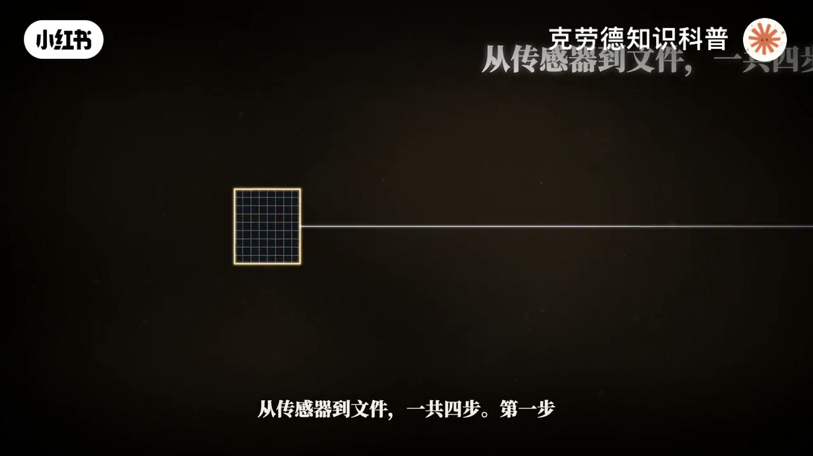
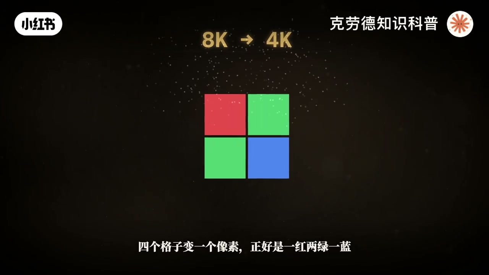
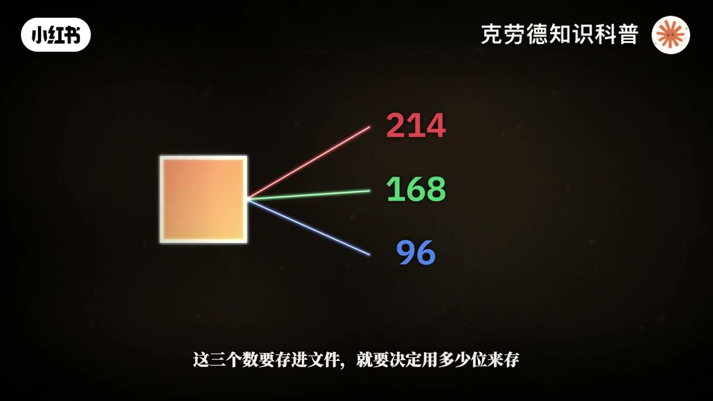
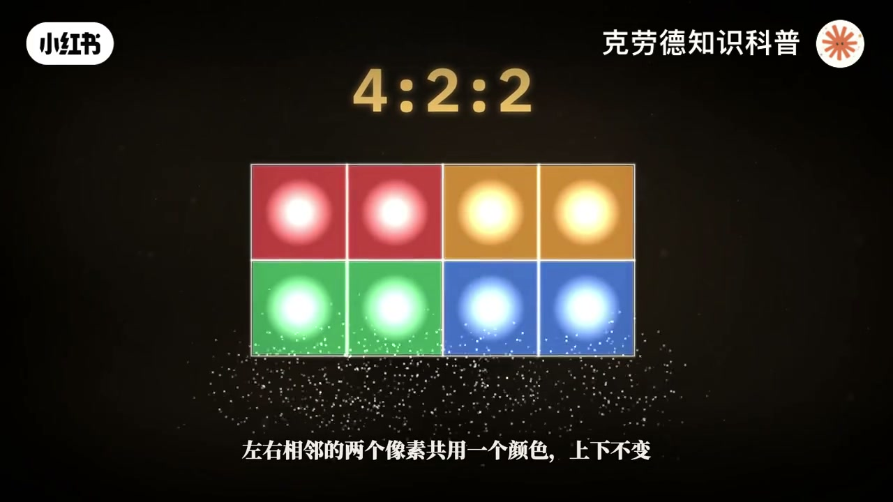
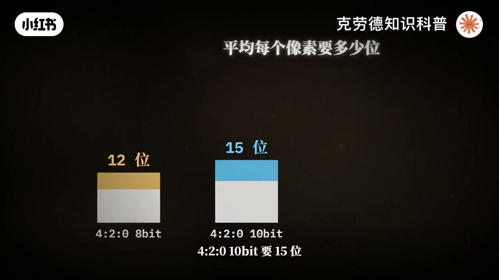
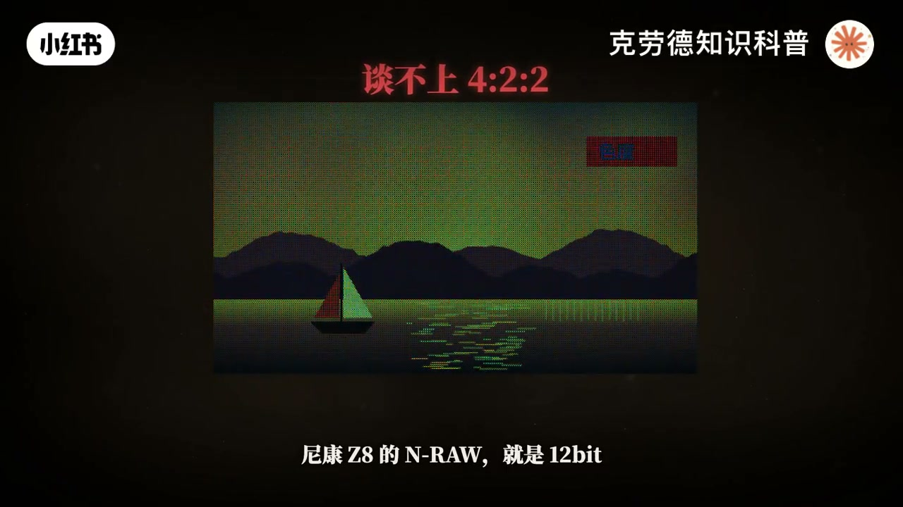
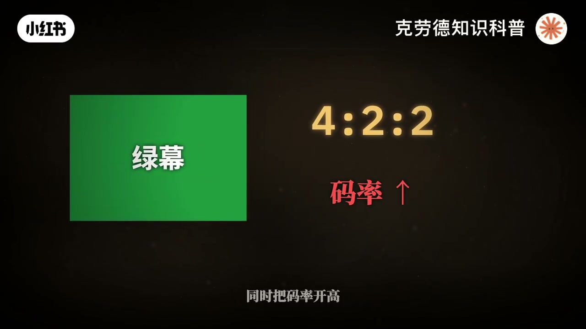

内容要点
「拜耳滤镜和10bit422都是什么？这期详解」教程要点：这一期我们把视频的422、420、444、8比特、10比特还有拜尔滤镜从头到尾讲透 → 打开相机的录像菜单 → 你看到的就是这样一串字 → 4K、10比特、422、100M；详见正文
知识结构
这一期我们把视频的422、420、444、8比特、10比特还有拜尔滤镜从头到尾讲
华为的RYYB
第一行只留两个颜色
- 这一期我们把视频的422、420、444、8比特、10比特还有拜尔滤镜从头到尾讲透
- 打开相机的录像菜单
- 你看到的就是这样一串字
- 4K、10比特、422、100M
- 这串字背后有几件很反常的事
这一期我们把视频的422、420、444、8比特、10比特还有拜尔滤镜从头到尾讲透
00:00–04:13这一期我们把视频的422、420、444、8比特
这一期我们把视频的422、420、444、8比特、10比特还有拜尔滤镜从头到尾讲透；打开相机的录像菜单；你看到的就是这样一串字；4K、10比特、422、100M；这串字背后有几件很反常的事；一段4K的422、10比特视频；不压缩的话；每秒差不多4000Mbps；相机实际只存100Mbps；少了将近40倍；传感器上每个格子其实只知道一种颜色；录进去的颜色信息又被丢掉一半；和你看画面几乎看不出来；从传感器到文件一共四步；第一步传感器怎么拿到颜色；这是拜尔滤镜；第二步每个数用多少位来存；这是8比特和10比特；第三步颜色信息留下多少；这是422；第四步怎么压缩；这是马滤；我们一步一步走；光子撞进传感器的归里；打出电子；电子被存起来；这就是拍照的原理；问题是；红光打出来的电子；和蓝光打出来的电子一模一样；传感器只知道来了多少光；不知道是什么颜色；它天生是色盲；要知道颜色；就得把红绿蓝分开亮；最直接的办法；是用棱镜把光分成三数；送给三块传感器；老式的广播摄像机就是这么做的；可是体积大成本高；1976年；科达的工程师布莱斯；拜尔拿到了一项专利；只用一块传感器；在每个格子上盖一片小滤镜；一个格子只放一种颜色进去；这就是拜尔滤镜；到今天还是相机的主流；拜尔的排法；是两行两列一组；一个红；两个绿；一个蓝；绿色占一半；红和蓝各占四分之一；一块3300万像素的传感器；实际是1650万个绿格子；825万个红格子；825万个蓝格子；为什么绿色最多；因为人眼对明暗的感受；大部分来自绿色；高清视频的标准里；算亮度时；绿色占72%；红色占21%；蓝色只占7%；绿格子多；明暗的细节就准；这时候；每个格子只有一个数；只知道一种颜色；直接显示出来；就是这样一张红绿蓝的马赛克；每个格子缺的两种颜色；只能看周围的邻居来猜；这一步叫反败尔；也叫去马赛克；最简单的办法；就是取周围几个格子的平均值；可是平均法碰到边缘就出错；边缘两边的亮度被混在一起；好的算法；会先把最密的绿色重建出来；判断边缘朝哪个方向；再沿着边缘去猜；不跨过去；猜错的时候；画面就会出现不存在的颜色；比如特别细的条纹；红绿蓝格子；刚好踩在不同的条纹上；就冒出彩色的波纹；这叫尾色和姆尔纹；传统的办法；是在传感器前面；加一层低通滤镜；把抄袭的细节弄糊一点；代价是锐度下降；所以3300万像素；说的是3300万个格子；每个格子只量一种颜色；另外2%的颜色是算出来的；录视频；反占了便宜；尼康Z8用8K下彩样成4K时；四个格子变一个像素；正好是一红两绿一蓝；三种颜色都是真实量到的；基本不用猜；索尼A7M5是7K下彩样到4K；大约3.3个格子变一个像素；也比一个格子一个像素扎实得多；Dyre不是唯一的排法；相机和手机上常见的；还有四种；富士的X-Trans；世马的Phobium；华为的RYYB；还有四合一；富士的X-Trans；把重复单元从2x2变成了6x6；排列更不规律；不容易出母耳闻；所以可以不要低通滤镜；代价是反败耳的算法更难做；世马的Phobium不用马赛克；硅吸收光有深浅之分；蓝光停在浅层；红光砖的最深；三层叠起来；一个位置就能量三种颜色；代价是层与层之间；颜色分得不够干净


04:12–08:34华为的RYYB
华为的RYYB；把绿色滤镜换成黄色；黄色同时放红光和绿光进去；华为撑近光亮多了四成；代价试算颜色更蓝；白平衡也更难做准；四合一；是四个同色的小格子；当成一个大格子用；大格子再按败耳排列；手机上最常见；反败耳之后；每个像素有了红绿蓝三个数；这三个数要存进文件；就要决定用多少位来存；位就是二进制的一位；只能是0或者1；每多一位；能表示的极数就翻一倍；8比特是256级；10比特是1024级；12比特是4096级；14比特是16384级；你可以把从最暗到最亮；想成一段楼梯；8比特是256级台阶；10比特是1024级；楼一样高；台阶更细；红绿蓝三个通道盛起来；8比特是1677万种颜色；10比特是10.7一种；多出来的；不是更鲜艳的颜色；而是更细腻的过程；注意；卫生不是动态范围；动态范围是楼有多高；卫生是楼梯分了多少级；这是两回事；动态范围到底是什么；我们前面有一期专门讲透了；感兴趣的朋友可以去看；视频的标准里；亮度并没有用满；8比特通常只用16-235；实际220级；10比特用64-940；实际877级；两头流出来的部分；是给超黑和超白的余量；台阶太粗会出什么问题；看天空；天空的亮度变化非常缓；从这里到那里；也许只跨过几级台阶；台阶的边界就显出来了；变成一条一条的色带；这叫断层；Log让问题更严重；Log要把十几档亮度塞进同一个范围；每一档分到的台阶就少了；Log的原理；我们前面也有一期详细讲过；感兴趣可以回去看；按Sony S-Log3的公式；每一档亮度大约分到79个码值；换成8比特只有20个；调色时把对比度拉开；这20级台阶也被拉开；断层就出来了；所以High Log一定要用10比特；有意思的是；噪点反而有帮助；噪点会把台阶的边界打散；眼睛就看不出色带；所以降噪太狠；压缩太狠的时候；断层法更明显；那10比特是给观众看的吗；大多不是；很多显示器只能显示8比特；平台上的普通视频也基本是8比特；10比特真正的价值；是给调色留空间；现在到第三步；如果红绿蓝每个像素都存；数据量非常大；工程师利用了人眼的一个弱点；人眼看细节主要靠明暗；对颜色的细节就没那么明暗；实验测出来；人眼能分辨的颜色条纹；人眼的线线约是每度视角11-12条；而明暗条纹能分辨的细得多；这个弱点；在上世纪50年代发明彩色电视时；就被用上了亮度信号走宽的通道；颜色信号走窄的通道；这样既省带宽；黑白电视也能继续看；视频不直接存红绿蓝；而是换算成三个数；一个亮度Y；两个色差CB和C2；CB大致是蓝色减去亮度；C2大致是红色减去亮度；换算本身几乎不丢信息；只是换了一种表达方式；亲眼看一下；亮度这一张有全部的细节；两张色差本来就是模糊的色块；把色差缩小一半再放大回去；和亮度合起来你几乎看不出区别；这就是色度抽样；常见的色度抽样有四种；444；422；420；还有比较老的411；这三个数字描述的是一个四格宽；二行高的小方块；第一个4是这个小方块的宽度；第二个数是第一行保留几个颜色；第三个数是第二行相对第一行；颜色变化了几次；亮度每个像素都保留；下面说的都只是颜色；444；第一行四个颜色；第二行也变化四次；每个像素都有自己的颜色；一点没少；422

08:32–13:13第一行只留两个颜色
第一行只留两个颜色；第二行也变化两次；左右相邻的两个像素共用一个颜色；上下不变；数据量是444的三分之二；420；第一行留两个颜色；第二行变化零次；也就是第二行直接沿用第一行的颜色；四个像素共用一个颜色；数据量是一半；注意这里的零不是没有颜色；也不是少了一种颜色；只是第二行没有自己单独的颜色；411；成像四个像素；共用一个颜色；纵向不变；数据量也是一半；老是DV上用过；换算成分辨率；就更直观了；4K视频的亮度永远是3840x2160；422的颜色分辨率是1920x2160；420的颜色只有1920x1080；也就是说；4K420的视频；明暗是4K；颜色其实只有1080P；人眼好骗；电脑不好骗；什么时候能看出差别；一是绿目抠向；电脑靠颜色找边缘；颜色越粗；边缘越糙；索尼的说明书里；也专门提到这一点；二是大幅度调色和拉薄合度；三是纯红；纯蓝的细小文字和图形；现在把卫生和色度抽样；放到一起算；平均每个像素；4208比特要12位；42010比特要15位；42210比特要20位；44410比特要30位；乘上4K的829万的像素；再乘每秒24帧；4208比特是每秒2.4千兆比特；42210比特是4千兆比特；44410比特接近6千兆比特；相机实际存多少；A7M5的4K 24P42210比特；有100兆的档位；也有240兆的全帧内档位；相比不压缩；分别压缩了大约40倍和17倍；压缩大致分两种；全帧内每一帧单独压；码率高 剪辑轻松；长距OP是隔一段存一张完整的帧；其他帧只存变化的部分；省空间但剪辑时电脑更吃力；422是留下多少信息；码率是压缩的多痕；这是两回事；A7M5里100兆的420和100兆的422都有；同样的码率；422要多色三分之一的数据；每份数据分到的码率就更少；所以422不是越选越好；码率要跟上；前面讲的色度抽样都发生在反败尔之后；RAW视频存的是传感器的原始读数；一个格子一个数；还没有亮度和色度之分；所以RAW谈不上422；尼康G8的NRAW就是12比特；同一台Z8还能录ProRes 422H2；名字里的422就是42210比特；它已经完成了反败尔；码率大约每秒700兆；文件也大得多；视频最后发到网上；YouTube官方建议的就是420；B站普通视频也基本是4208比特；观众最终看到的大多是420；那拍422还有什么用；用在中间的过程；抠像和调色都发生在压缩之前；素材的颜色越完整；处理的余量就越大；最后才压回420；还有一个常见说法；4K420缩成1080P就变成了444；这是对的；4K的颜色分辨率正好是1920；剩1080；虽然每个像素都有自己的颜色；但说它同时变成了10比特；就不准确了；缩小时亮度确实能多出一点精度；但颜色还是8比特；也不等于真正的10比特；最后说怎么选；不调色；直接出片；8比特；420就够了；索尼的说明也是这么建议的；拍Log要调色；必须10比特；要抠绿幕；或者调色幅度很大；用422同时把码率开高；想要最大的后期空间；拍Roll代价是存储和剪辑的压力；如果只能优先选一个；拍Log时；先保10比特；再保码率；最后才是422；从一粒光子到一个视频文件；拜尔滤镜丢掉了2%的颜色测量；色度抽样又丢掉一半数据；压缩再丢掉几十倍；可画面看起来依然完整；因为这串数字背后；工程师一直在回答同一个问题；哪些信息；原眼其实不在乎；请不吝点赞 订阅 转发 转发




口述/画面要点（402段）
结合 Whisper medium 与画面大字整理；专有名词已校对。
这一期我们把视频的422、420、444、8比特、10比特还有拜尔滤镜从头到尾讲透
打开相机的录像菜单
你看到的就是这样一串字
4K、10比特、422、100M
这串字背后有几件很反常的事
一段4K的422、10比特视频
不压缩的话
每秒差不多4000Mbps
相机实际只存100Mbps
少了将近40倍
传感器上每个格子其实只知道一种颜色
录进去的颜色信息又被丢掉一半
和你看画面几乎看不出来
从传感器到文件一共四步
第一步传感器怎么拿到颜色
这是拜尔滤镜
第二步每个数用多少位来存
这是8比特和10比特
第三步颜色信息留下多少
这是422
第四步怎么压缩
这是马滤
我们一步一步走
光子撞进传感器的归里
打出电子
电子被存起来
这就是拍照的原理
问题是
红光打出来的电子
和蓝光打出来的电子一模一样
传感器只知道来了多少光
不知道是什么颜色
它天生是色盲
要知道颜色
就得把红绿蓝分开亮
最直接的办法
是用棱镜把光分成三数
送给三块传感器
老式的广播摄像机就是这么做的
可是体积大成本高
1976年
科达的工程师布莱斯
拜尔拿到了一项专利
只用一块传感器
在每个格子上盖一片小滤镜
一个格子只放一种颜色进去
这就是拜尔滤镜
到今天还是相机的主流
拜尔的排法
是两行两列一组
一个红
两个绿
一个蓝
绿色占一半
红和蓝各占四分之一
一块3300万像素的传感器
实际是1650万个绿格子
825万个红格子
825万个蓝格子
为什么绿色最多
因为人眼对明暗的感受
大部分来自绿色
高清视频的标准里
算亮度时
绿色占72%
红色占21%
蓝色只占7%
绿格子多
明暗的细节就准
这时候
每个格子只有一个数
只知道一种颜色
直接显示出来
就是这样一张红绿蓝的马赛克
每个格子缺的两种颜色
只能看周围的邻居来猜
这一步叫反败尔
也叫去马赛克
最简单的办法
就是取周围几个格子的平均值
可是平均法碰到边缘就出错
边缘两边的亮度被混在一起
好的算法
会先把最密的绿色重建出来
判断边缘朝哪个方向
再沿着边缘去猜
不跨过去
猜错的时候
画面就会出现不存在的颜色
比如特别细的条纹
红绿蓝格子
刚好踩在不同的条纹上
就冒出彩色的波纹
这叫尾色和姆尔纹
传统的办法
是在传感器前面
加一层低通滤镜
把抄袭的细节弄糊一点
代价是锐度下降
所以3300万像素
说的是3300万个格子
每个格子只量一种颜色
另外2%的颜色是算出来的
录视频
反占了便宜
尼康Z8用8K下彩样成4K时
四个格子变一个像素
正好是一红两绿一蓝
三种颜色都是真实量到的
基本不用猜
索尼A7M5是7K下彩样到4K
大约3.3个格子变一个像素
也比一个格子一个像素扎实得多
Dyre不是唯一的排法
相机和手机上常见的
还有四种
富士的X-Trans
世马的Phobium
华为的RYYB
还有四合一
富士的X-Trans
把重复单元从2x2变成了6x6
排列更不规律
不容易出母耳闻
所以可以不要低通滤镜
代价是反败耳的算法更难做
世马的Phobium不用马赛克
硅吸收光有深浅之分
蓝光停在浅层
红光砖的最深
三层叠起来
一个位置就能量三种颜色
代价是层与层之间
颜色分得不够干净
华为的RYYB
把绿色滤镜换成黄色
黄色同时放红光和绿光进去
华为撑近光亮多了四成
代价试算颜色更蓝
白平衡也更难做准
四合一
是四个同色的小格子
当成一个大格子用
大格子再按败耳排列
手机上最常见
反败耳之后
每个像素有了红绿蓝三个数
这三个数要存进文件
就要决定用多少位来存
位就是二进制的一位
只能是0或者1
每多一位
能表示的极数就翻一倍
8比特是256级
10比特是1024级
12比特是4096级
14比特是16384级
你可以把从最暗到最亮
想成一段楼梯
8比特是256级台阶
10比特是1024级
楼一样高
台阶更细
红绿蓝三个通道盛起来
8比特是1677万种颜色
10比特是10.7一种
多出来的
不是更鲜艳的颜色
而是更细腻的过程
注意
卫生不是动态范围
动态范围是楼有多高
卫生是楼梯分了多少级
这是两回事
动态范围到底是什么
我们前面有一期专门讲透了
感兴趣的朋友可以去看
视频的标准里
亮度并没有用满
8比特通常只用16-235
实际220级
10比特用64-940
实际877级
两头流出来的部分
是给超黑和超白的余量
台阶太粗会出什么问题
看天空
天空的亮度变化非常缓
从这里到那里
也许只跨过几级台阶
台阶的边界就显出来了
变成一条一条的色带
这叫断层
Log让问题更严重
Log要把十几档亮度塞进同一个范围
每一档分到的台阶就少了
Log的原理
我们前面也有一期详细讲过
感兴趣可以回去看
按Sony S-Log3的公式
每一档亮度大约分到79个码值
换成8比特只有20个
调色时把对比度拉开
这20级台阶也被拉开
断层就出来了
所以High Log一定要用10比特
有意思的是
噪点反而有帮助
噪点会把台阶的边界打散
眼睛就看不出色带
所以降噪太狠
压缩太狠的时候
断层法更明显
那10比特是给观众看的吗
大多不是
很多显示器只能显示8比特
平台上的普通视频也基本是8比特
10比特真正的价值
是给调色留空间
现在到第三步
如果红绿蓝每个像素都存
数据量非常大
工程师利用了人眼的一个弱点
人眼看细节主要靠明暗
对颜色的细节就没那么明暗
实验测出来
人眼能分辨的颜色条纹
人眼的线线约是每度视角11-12条
而明暗条纹能分辨的细得多
这个弱点
在上世纪50年代发明彩色电视时
就被用上了亮度信号走宽的通道
颜色信号走窄的通道
这样既省带宽
黑白电视也能继续看
视频不直接存红绿蓝
而是换算成三个数
一个亮度Y
两个色差CB和C2
CB大致是蓝色减去亮度
C2大致是红色减去亮度
换算本身几乎不丢信息
只是换了一种表达方式
亲眼看一下
亮度这一张有全部的细节
两张色差本来就是模糊的色块
把色差缩小一半再放大回去
和亮度合起来你几乎看不出区别
这就是色度抽样
常见的色度抽样有四种
444
422
420
还有比较老的411
这三个数字描述的是一个四格宽
二行高的小方块
第一个4是这个小方块的宽度
第二个数是第一行保留几个颜色
第三个数是第二行相对第一行
颜色变化了几次
亮度每个像素都保留
下面说的都只是颜色
444
第一行四个颜色
第二行也变化四次
每个像素都有自己的颜色
一点没少
422
第一行只留两个颜色
第二行也变化两次
左右相邻的两个像素共用一个颜色
上下不变
数据量是444的三分之二
420
第一行留两个颜色
第二行变化零次
也就是第二行直接沿用第一行的颜色
四个像素共用一个颜色
数据量是一半
注意这里的零不是没有颜色
也不是少了一种颜色
只是第二行没有自己单独的颜色
411
成像四个像素
共用一个颜色
纵向不变
数据量也是一半
老是DV上用过
换算成分辨率
就更直观了
4K视频的亮度永远是3840x2160
422的颜色分辨率是1920x2160
420的颜色只有1920x1080
也就是说
4K420的视频
明暗是4K
颜色其实只有1080P
人眼好骗
电脑不好骗
什么时候能看出差别
一是绿目抠向
电脑靠颜色找边缘
颜色越粗
边缘越糙
索尼的说明书里
也专门提到这一点
二是大幅度调色和拉薄合度
三是纯红
纯蓝的细小文字和图形
现在把卫生和色度抽样
放到一起算
平均每个像素
4208比特要12位
42010比特要15位
42210比特要20位
44410比特要30位
乘上4K的829万的像素
再乘每秒24帧
4208比特是每秒2.4千兆比特
42210比特是4千兆比特
44410比特接近6千兆比特
相机实际存多少
A7M5的4K 24P42210比特
有100兆的档位
也有240兆的全帧内档位
相比不压缩
分别压缩了大约40倍和17倍
压缩大致分两种
全帧内每一帧单独压
码率高 剪辑轻松
长距OP是隔一段存一张完整的帧
其他帧只存变化的部分
省空间但剪辑时电脑更吃力
422是留下多少信息
码率是压缩的多痕
这是两回事
A7M5里100兆的420和100兆的422都有
同样的码率
422要多色三分之一的数据
每份数据分到的码率就更少
所以422不是越选越好
码率要跟上
前面讲的色度抽样都发生在反败尔之后
RAW视频存的是传感器的原始读数
一个格子一个数
还没有亮度和色度之分
所以RAW谈不上422
尼康G8的NRAW就是12比特
同一台Z8还能录ProRes 422H2
名字里的422就是42210比特
它已经完成了反败尔
码率大约每秒700兆
文件也大得多
视频最后发到网上
YouTube官方建议的就是420
B站普通视频也基本是4208比特
观众最终看到的大多是420
那拍422还有什么用
用在中间的过程
抠像和调色都发生在压缩之前
素材的颜色越完整
处理的余量就越大
最后才压回420
还有一个常见说法
4K420缩成1080P就变成了444
这是对的
4K的颜色分辨率正好是1920
剩1080
虽然每个像素都有自己的颜色
但说它同时变成了10比特
就不准确了
缩小时亮度确实能多出一点精度
但颜色还是8比特
也不等于真正的10比特
最后说怎么选
不调色
直接出片
8比特
420就够了
索尼的说明也是这么建议的
拍Log要调色
必须10比特
要抠绿幕
或者调色幅度很大
用422同时把码率开高
想要最大的后期空间
拍Roll代价是存储和剪辑的压力
如果只能优先选一个
拍Log时
先保10比特
再保码率
最后才是422
从一粒光子到一个视频文件
拜尔滤镜丢掉了2%的颜色测量
色度抽样又丢掉一半数据
压缩再丢掉几十倍
可画面看起来依然完整
因为这串数字背后
工程师一直在回答同一个问题
哪些信息
原眼其实不在乎
请不吝点赞 订阅 转发 转发